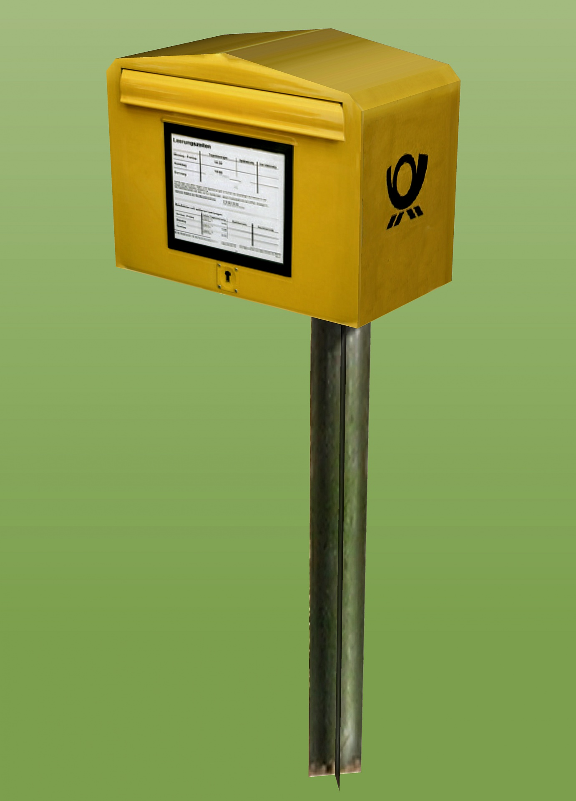

Objetivo de aprendizaje: caracteriza los diferentes medios de comunicación de acuerdo con la validez y pertinencia de la información.
Enunciado: escucha las adivinanzas y da clic sobre la imagen para descubrir el acertijo.
Volaré donde me mandes
sin tener alas ni pies,
para contar a tus amigos
lo que ellos quieran saber.
¿Quién soy?
-
Telegrama
-

Buzón
-
Carta
-
TV
Así es.
Una carta es un medio de comunicación escrito por un emisor (remitente) y enviado a un receptor (destinatario).
La carta tiene unas características en su estilo de escritura, por ejemplo, puede ser:
Formal: es todo tipo de correspondencia escrita de carácter profesional, laboral o institucional.
Coloquial o informal: es una carta escrita en lenguaje informal y sencillo para que tanto remitente como receptor entiendan el mensaje. Se usa entre amigos y familiares.
Informativa: sirven para informar sobre eventos, fiestas, acontecimientos, entre otros.
Una caja muy oscura
con una ventana brillante
que cuenta muchos cuentos
a los que se sientan delante.
¿Quién soy?
-
Buzón
-
Telegrama
-
Carta
-
TV
Así es.
La televisión es un sistema para la transmisión y recepción de imágenes y sonido a distancia que simulan movimiento. Los primeros televisores fueron sacados al mercado en versión mecánica en 1884. En la década de 1970, los televisores a color empezaron a comercializarse en los países desarrollados. (Wikipedia,2020)
Vuela sin alas,
habla sin boca,
corre sin pies
y llega muy lejos.
Dime, ¿qué es?
-
Buzón
-
Carta
-
TV
-
Telegrama
Así es.
El telegrama fue uno de los primeros medios de comunicación escrito que existió en el siglo 19 (XIX). Consistía en un texto corto de pocas palabras. En aquella época era más veloz que enviar una carta, pero con un costo muy superior porque se le debía hacer mantenimiento a los circuitos eléctricos.
Por mi boca entran,
pero no sé leer
y aunque todas me las trago
nunca mancho su papel.
-
Carta
-
Buzón
-
Telegrama
-
TV
Así es.
Los buzones de correos son los objetos que instala el servicio de correos en la calle o en locales públicos para que los ciudadanos depositen sus cartas y postales.
Los buzones públicos se colocan en zonas de paso y se suelen pintar en colores llamativos para facilitar su localización. (Wikipedia, 2019)
No es correcto, sigue intentanto

Aprendamos sobre los medios de comunicación[1]
Los medios de comunicación son distintas tecnologías que a través de dispositivos permiten a un emisor ponerse en contacto con un público receptor. La comunicación ocurre en tiempo real o en diferido mediante ondas sonoras como ocurre con la radio, la televisión y el teléfono o por texto escrito como es el caso de las cartas.
Ahora veamos una corta clasificación de los medios de comunicación:
- Medios de comunicación masiva: hacen referencia al alcance que tienen los emisores de llegar a un amplio número de personas sin un intercambio de roles entre emisor y receptor.
- Medios interpersonales de comunicación: permiten conectar a dos o más personas de forma privada y a menudo íntima. Por ejemplo, el chat o el teléfono.
- Medios de comunicación para el entretenimiento: el alcance de este tipo de medios está encaminado al uso masivo de redes para el disfrute y el ocio. Por ejemplos, las redes sociales.
Ejemplos de medios de comunicación: en la siguiente imagen podrás ver todos los medios de comunicación que existen en la actualidad, da clic sobre cada uno y aprenderás sobre su origen y funcionalidad.
Para que sigas aprendiendo sobre los medios de comunicación te invitamos a ver el siguiente contenido
Video: Los medios de comunicación.
Duración: 4:25 minutos
Enunciado: en este video puedes conocer los diversos medios de comunicación que hay actualmente en el mundo. Conversa con tus padres:
¿Consideras importantes los medios de comunicación?, ¿por qué? Escribe el resumen de la conversación en tu cuaderno.
El uso de los medios mencionados en la infografía, requiere de una comunicación consciente en la que los humanos intercambian información a través de diferentes elementos como:
- Mensaje: es el tipo de información que se comunica.
- Emisor: es la persona que envía el mensaje.
- Receptor: es la persona que recibe el mensaje.
- Código: conjunto de elementos simbólicos, compartidos por los hablantes que comunican un mensaje. Implica la comprensión o descodificación de la información.
- Canal: medio de comunicación por el que se envía la información. Por ejemplo, la radio, la carta, el correo electrónico, el celular, etc.
- Contexto: se relaciona con el lugar y la cultura de los hablantes, tanto del emisor como del receptor del mensaje.
Objetivo de aprendizaje: caracteriza los diferentes medios de comunicación de acuerdo con la validez y pertinencia de la información.
Enunciado: lee los textos y selecciona el medio de comunicación correcto.
Duración: 30 minutos
Jaimito es un niño de la ciudad de Medellín. En una visita al Parque Explora conoció a Luis, un niño que había venido de una vereda muy lejana llamada La Culebrera en Puerto Triunfo, Antioquia. Jaimito y Luis se hicieron muy buenos amigos y compartieron sus aventuras en el parque. Pero, cuando llegó el momento de despedirse Jaimito le dio a Luis su número de celular para que lo llamara cuando quisiera. Luis le recordó a Jaimito que él vivía en la vereda La Culebrera de Puerto Triunfo. Jaimito desea comunicarse con Luis, ¿cuál de los siguientes medios de comunicación debe utilizar?
Lucía vive en Bogotá y necesita enviar con urgencia un mensaje a Matías que está en la ciudad de Medellín. ¿Cuál de los siguientes medios de comunicación le sugieres a Lucía para que se comunique con rapidez?
Juan es el gerente de Empresas Públicas de Medellín (EPM) y tiene que enviar una comunicación con 10 documentos anexos al jefe de personal de la hidroeléctrica Hidro Ituango. El jefe de personal requiere la información en 1 hora pues debe entregársela a su supervisor. ¿Qué medio de comunicación debe utilizar el gerente de EPM para enviarle el paquete de documentos al jefe de personal?
Si no tienes internet en tu casa o si quieres avanzar y hacer trabajos extras para aprender sobre los medios de comunicación, te sugerimos descargar e imprimir la siguiente guía de trabajo que realizó el Ministerio de Educación Nacional para ampliar tus conocimientos y practicar.
Enunciado: para que sigas aprendiendo sobre los medios de comunicación te invitamos a explorar el siguiente documento.
Texto: Los medios de comunicación